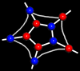
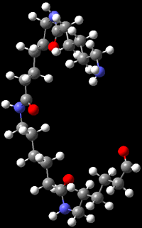

|  |
What Are Polymers?Polymers are a very important class of materials. Polymers occur naturally in the form of proteins, cellulose(plants), starch(food) and natural rubber. Engineering polymers, however, are usually synthetic polymers. The field of synthetic polymers or plastics is currently one of the fastest growing materials industries. The interest in engineering polymers is driven by their manufacturability, recyclability, mechanical properties, and lower cost as compared to many alloys and ceramics. Also the macromolecular structure of synthetic polymers provides good biocompatibility and allows them to perform many biomimetic tasks that cannot be performed by other synthetic materials, which include drug delivery, use as grafts for arteries and veins and use in artificial tendons, ligaments and joints. A polymer is a material whose molecules contain a very large number of atoms linked by covalent bonds, which makes polymers macromolecules. Polymers consist mainly of identical or similar units joined together. The unit forming the repetitive pattern is called a "mer" or "monomer". Usually the biggest differences in polymer properties result from how the atoms and chains are linked together in space. Polymers that have a 1-D structure will have different properties than those that have either a 2-D or 3-D structue. |
 |